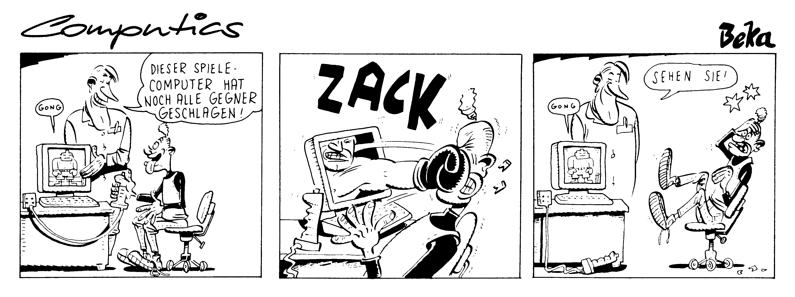

Tips & Tricks für Einsteiger
Haben Sie Ladeprobleme mit fremden Kassetten? Oder möchten Sie auf einfachste Weise den Joystick abfragen? Auch diesmal haben wir wieder ein paar interessante Hinweise für diejenigen Leser, die sich auf dem C 64 »noch nicht so ganz fit« fühlen.
Man kann es nur immer wieder betonen: Wir sind eine Zeitschrift, die von ihren Lesern lebt! Helfen Sie den Einsteigern unter den C 64-Fans durch einen besonderen POKE, eine kurze, aber sehr nützliche Basic-Routine oder einfach durch eine Problemlösung, die Sie als besonders genial erachten. Schreiben Sie uns unter dem Stichwort »Tips & Tricks«!
Datasette richtig justiert
Jetzt ist Schluß mit »LOAD ERROR« beim Abspielen von fremden Kassetten.
Jeder, der eine Datasette besitzt, weiß, daß diese bei einem anderen C 64-Besitzer meist nicht mit derselben Tonkopfeinstellung justiert ist. Bekommt man eine heißerwartete Kassette mit Spielen oder anderen Programmen, womöglich noch im Turbo-Tape-Format, ist die Enttäuschung groß, wenn man feststellt, daß die Tonkopfjustierung von Aufnahme- und Wiedergabegerät abweicht.
»SYNCHRO JUSTAGE« (Listing 1) brennt einer Kassette ein 50-Herz-Synchronsignal auf, das nach der Übergabe der Kassette mit »SYNCHRO JUSTAGE« auf dem Bildschirm ausgewertet wird. Der Empfänger stellt nun mit der Einstellschraube seinen Tonkopf so ein, daß das Flackern des Bildschirmes minimal wird. Je weniger er flackert, desto besser hat man justiert. Wandert der Synchronbalken nach oben, läuft die Datasette bei der Wiedergabe schneller als bei der Aufnahme und umgekehrt. Dann gilt es zusätzlich die Motorgeschwindigkeit zu überprüfen und optimal einzustellen, bis der schwarze Balken stillsteht.
Ich tausche nur noch Kassetten mit Synchron-Signal aus und kann keine Probleme mit meiner Datasette beklagen. Man muß zwar von Zeit zu Zeit seine Tonkopfeinstellung einer anderen anpassen, kann aber seinem Bekannten sagen, wieviele Umdrehungen seine Einstellschraube von der eigenen abweicht.
(Reinhard Abdel-Hamid/tr)Betrifft: Joystick
Jeder Neuling unter den C 64-Fans wird sich früher oder später fragen, warum Commodore gleich zwei Joystick-Ports einbaute, es aber versäumte, das Basic des C 64 um eine Funktion zu bereichern, diese Joysticks auch abzufragen. Viele andere Computer haben einen »JOY(X)«-Befehl, der die Richtung angibt, in die der Joystick gerade gedrückt wird.
Auf dem C 64 wurden solche Abfragen bisher mit langwierigen IF-THEN-Sequenzen über die PEEK-Funktion realisiert. Es gibt aber einen sehr viel eleganteren Weg: die DEF FN-Funktion.
Wenn man nämlich am Anfang eines Basic-Programms definiert:
DEFFNJOY(X)=INT((LOG(255.5-(PEEK(56322-X)OR224)))/LOG(2)+2)
so läßt sich über »PRINT FN JOY(x)« der Joystick abfragen, »x« gibt dabei an, ob man die Position von Joystick-Port 1 oder 2 wissenmöchte. Esentsprechen: 1: Nullstellung, 2: oben, 3: unten, 4: links, 5: rechts und 6: Feuerknopf
Über eine »ON FN JOY(x) GOTO …«-Anweisung ließe sich dann äußerst schnell in die entsprechenden Unterprogramme verzweigen.
(Henning Zipf/tr)Das elektronische Tagebuch
Uralt schon ist das Bestreben vieler Leute, ihre geheimsten und privatesten Aufzeichnungen so gut wie möglich vor allzu neugierigen Mitmenschen zu schützen. Und wer kennt sie nicht, die Kladde mit dem Schlößchen, der solche Geheimnisse anvertraut werden — mit dem blauäugigen Glauben, es gäbe niemanden, der auf die Idee käme, sich dem Schloß mit einer aufgebogenen Büroklammer zu nähern…
Es liegt also nahe, sich nach einem wirkungsvolleren Schutz umzusehen. Der Computer bietet sich für solch verantwortungsvolle Dienste geradezu an. Es fehlt also nur noch das passende Programm.
Das »elektronische Tagebuch« in seiner Mikroausführung (Listing 2) ist da genau richtig. Die Vorteile liegen auf der Hand: Das Programm ist sehr kurz (eine Bildschirmseite) und zugleich recht komfortabel. Seine Benutzung bereitet also weder bei der Eingabe noch bei der Anwendung großen Aufwand.
Das Programm läßt sich theoretisch auf jedem Commodore-Computer verwenden, einzige Voraussetzung ist natürlich ein externes Speichermedium, sprich: Datasette oder Floppy.
Die vorliegende Version ist für den Gebrauch mit dem C 64 und Diskettenstation vorgesehen, die Anleitung zum Umschreiben auf Kassettenbetrieb und Hinweise für Benutzer anderer Computer folgen weiter unten.
Das Programm ist im Vergleich zur beschriebenen Kladde recht sicher. Absolut unknackbar ist es zwar nicht, aber es gehört Intelligenz statt Fingerspitzengefühl dazu, aus einer polyalphabetisch verschlüsselten und zu scheinbar beziehungslosen Zahlenfolgen umgewandelten Buchstabenkombination ein lesbares Satzgefüge (sprich: Text) zu machen. Außerdem steht es jedem frei, seine eigene Chiffriermethode zu entwickeln.
Doch kommen wir zum Programm selbst. Der Aufbau ist denkbar einfach: Gleich nach dem Start wird aus Sicherheitsgründen (für Ihren Text) die RUN/STOP-RESTORE-Funktion ausgeschaltet. In dem jetzt erscheinenden Mini-Menü müssen Sie sich entscheiden, ob Sie einen Text eingeben und codieren oder ob Sie ihn decodieren und lesen wollen. Dann werden Sie daran erinnert, eine Diskette (beziehungsweise Kassette) ins Laufwerk zu legen.
Sobald das alles erledigt ist, müssen Sie Ihre persönlichen Codezahlen eingeben, mit denen der Text »bearbeitet« werden soll. Für diese Codezahlen ist keine Begrenzung vorgesehen, da der Computer jedoch mit ihnen rechnen muß, empfiehlt es sich, ein manierliches Maß beizubehalten. (Mit Zahlen im dreistelligen Bereich sollte es keine Probleme geben.)
Jetzt teilt sich der Weg. Haben Sie vorhin im Minimenü eine 1 (für »codieren«) getippt, so können Sie jetzt Ihren Text eingeben. Dimensioniert ist ein Feld von 839 Zeichen, also gerade soviel, daß der Anweisungstext noch auf dem Bildschirm sichtbar bleibt und auch später, beim Decodieren, nichts vom Bildschirm nach oben »wegrutscht«. Wenn Sie übrigens Textteile mit »INST/DEL« löschen, so werden alle eingegebenen Zeichen, also sowohl die ursprünglichen Buchstaben als auch jedes »INST/DEL« mitgezählt und dann mitverschlüsselt. Damit lassen sich beim späteren Decodieren recht reizvolle Effekte erzielen. Probieren Sie’s doch einfach mal aus!
Selbstverständlich können Sie die Texteingabe auch schon vor Erreichen des 839. Zeichens abschließen: Sie brauchen nur die Sterntaste (»*«) zu drücken. Wenn Sie den Stern in Ihren Texten verwenden wollen, setzen Sie an der entsprechenden Programmstelle (Zeile 35) einfach nur ein anderes ENDE-Zeichen ein.
Sobald die Eingabe beendet ist, schreibt der Computer zunächst die Anzahl der Zeichen in die Datei. Dann errechnet er Buchstabe für Buchstabe nach einem bestimmten, sich ständig systematisch verändernden Prinzip (Sie finden es in Zeile 50) eine bestimmte Zahl und speichert diese ebenfalls auf der Diskette (oder auf der Kassette).
Anschließend, und hier vereinigen sich die beiden Programmzweige wieder (Zeile 99), werden durch »CLR« alle Variablen, also der Text und Ihre Codezahlen, gelöscht. Nun wird die Blockierung von RUN/STOP und RESTORE aufgehoben und das Programm beendet.
Derzweite Zweig, das Decodieren, beginnt in Zeile 70. Hier wird genau umgekehrt verfahren wie im ersten Teil: Erst wird die Anzahl der zu decodierenden Zahlen gelesen, dann kommen die Zahlen selbst an die Reihe. Stück für Stück werden sie aus der Datei geholt, entschlüsselt, in Buchstaben umgewandelt und ausgegeben.
Befindet sich ein errechneter ASCII-Code jedoch nicht im vorgesehenen Bereich (0-255), sprich: waren die eingegebenen Codezahlen falsch, wird das Programm mit entsprechender Fehlermeldung abgebrochen (Zeile 80).
Es kann auch vorkommen, daß Sie einen unleserlichen Zeichensalat auf den Bildschirm bekommen. Auch dann waren die Codes falsch, jedoch hielt sich die Abweichung so sehr in Grenzen, daß es rechnerisch nicht einwandfrei überprüfbar war. Beachten Sie auch, daß Sie für jeden Tag nur einen Eintrag in Ihr »Tagebuch« vornehmen dürfen.
Tips zum Umschreiben
Kassettengebrauch: Der Umbau des Mikro-Tagebuchs auf Kassettenbetrieb dürfte sich recht einfach gestalten: Für die beiden OPEN-Befehle in den Zeilen 50 und 70 sähe die Änderung wie folgt aus:
Zeile 50: OPEN 1,1,1,D$
Zeile 70: OPEN 1,1,0,D$
Benutzer anderer Computer als dem C 64 müssen den POKE gegen RUN/STOP-RESTORE (in den Zeilen 10 und 99) gegebenenfalls ändern oder ganz weglassen.
(Peter T. Schmidt/tr)